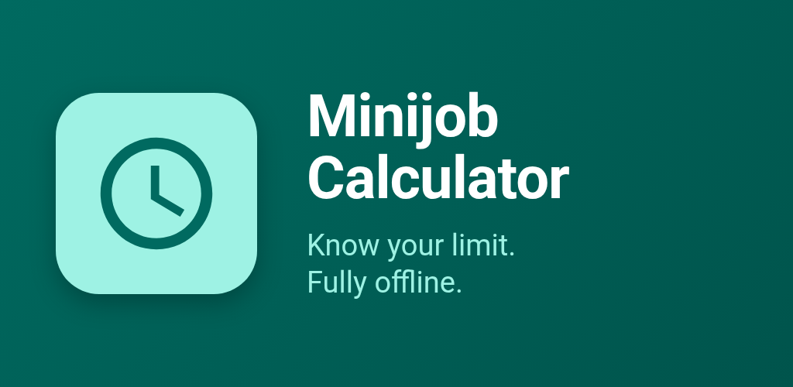
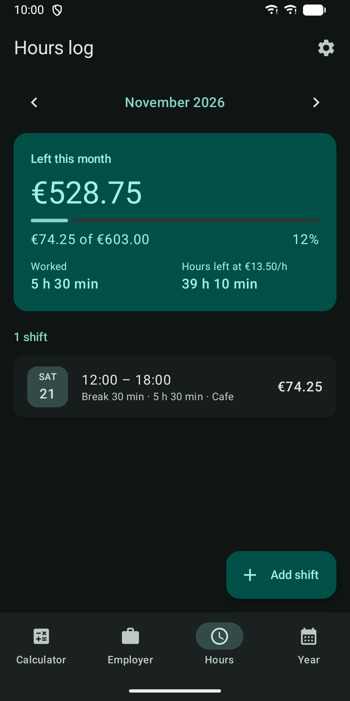
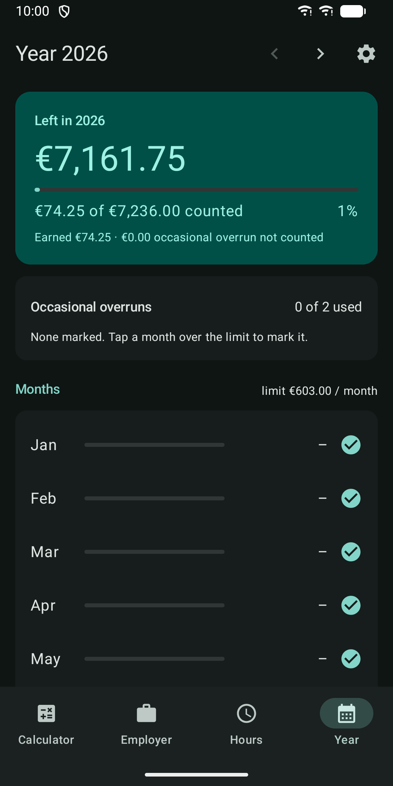
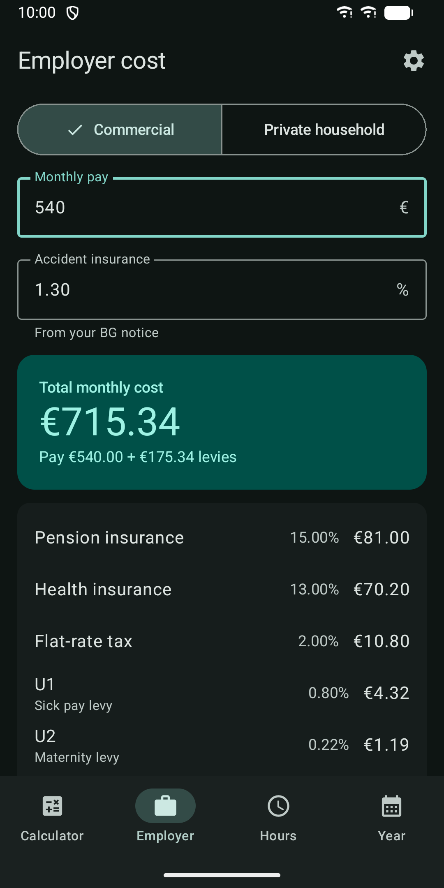
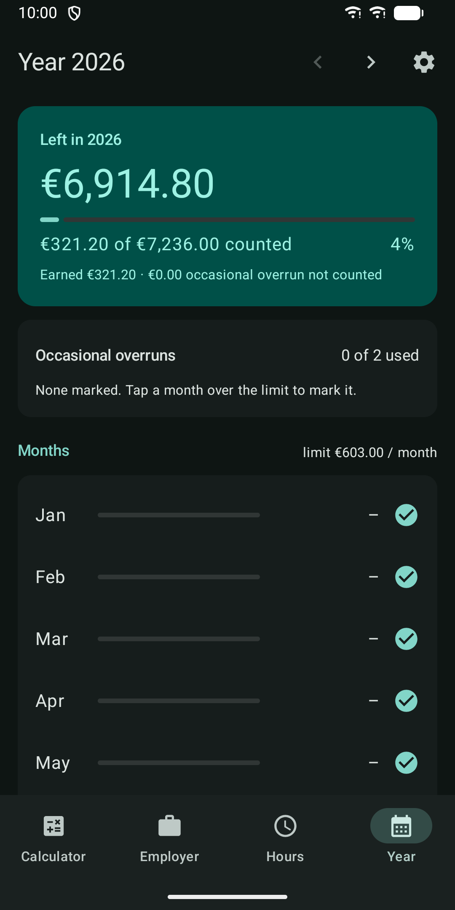

Calculadora Minijob Alemania
Límite, horas y coste del Minijob alemán 2026/2027. Sin cuenta.







Acerca de la app
¿Cuánto puedo ganar en mi Minijob? ¿Cuántas horas puedo trabajar? ¿Cuánto le cuesta a mi empleador? La Calculadora Minijob responde a estas preguntas con las normas alemanas de 2026 y 2027, sin conexión a internet. Calculadora para trabajadores • Límite de ingresos 2026: 603 € al mes, 7.236 € al año (2027 provisional: 633 € al mes) • Introduce tu salario por hora y las horas o los ingresos al mes; la app calcula el otro valor • Horas máximas con tu salario por hora • Cotización a la pensión (3,6 % con empleador comercial, 13,6 % en un hogar particular) y tu salario neto • Comprueba qué cambia si renuncias a cotizar a la pensión • Avisos si el salario está por debajo del mínimo o si los ingresos entran en el rango Midijob Coste para el empleador • Empleador comercial u hogar particular (Haushaltsscheck) • Cada cotización por separado: pensión, salud, impuesto a tanto alzado, U1, U2, cuota de insolvencia y seguro de accidentes • Coste mensual total del Minijob Registro de horas • Turnos con fecha, inicio, fin y pausa, también turnos nocturnos • Dinero y horas que te quedan este mes, actualizados al añadir turnos • Aviso antes de que un turno supere el límite mensual o anual • Los cambios de salario se aplican a los turnos correctos Resumen anual • Total del año frente al límite anual, mes a mes • Marca hasta 2 superaciones ocasionales al año, como permiten las normas Widget • Lo que te queda este mes y este año en la pantalla de inicio; tócalo para abrir el registro de horas Tus datos se quedan contigo • Sin permiso de internet, sin cuenta, sin anuncios, sin seguimiento • Sin copia de seguridad en la nube de Google; los datos solo pasan a un móvil nuevo con la transferencia entre dispositivos • Tema claro y oscuro, alemán e inglés, diseño para móvil y tableta, compatible con lectores de pantalla Nota: la app está disponible en alemán e inglés. Todos los resultados son estimaciones, no asesoramiento fiscal ni legal. Los valores de 2027 son provisionales hasta su confirmación oficial y se actualizan con nuevas versiones de la app.